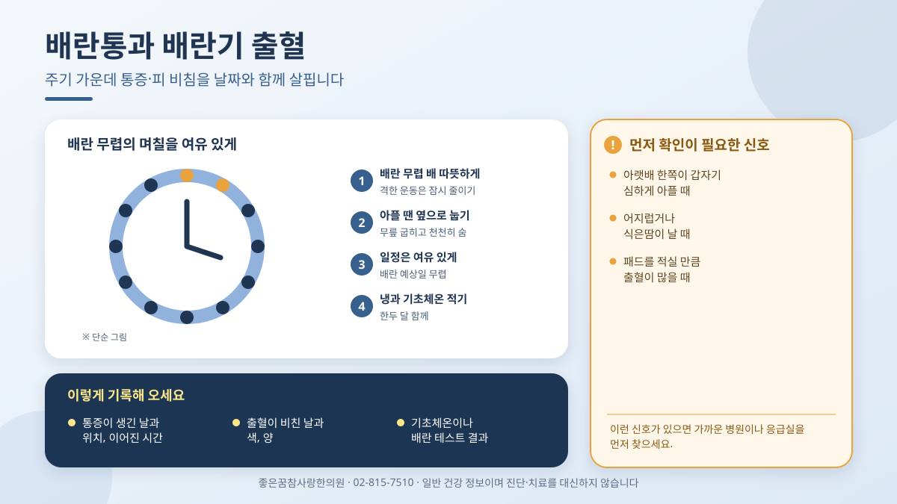

이종호 한의사 감수좋은꿈참사랑한의원 대표원장 (한의사 면허번호 19769)발행 2026-11-26 · 수정 2026-11-26
이 글의 차례
생리가 끝나고 열흘쯤 지난 오후, 회의 중에 아랫배 오른쪽이 콕콕 찌르듯 아픕니다. 하루 이틀 묵직하다가 저절로 가라앉는데, 그 무렵 속옷에 분홍빛 피가 살짝 비친 날도 있습니다. 생리도 아닌데 왜 이런지, 어디가 잘못된 건 아닌지 마음이 쓰입니다.
생리와 생리 사이, 대략 가운데쯤에 한쪽 아랫배가 아프거나 소량의 피가 비치는 일은 배란과 관련된 경우가 많습니다. 난소에서 난자가 나오는 과정에서 생기는 통증을 배란통, 그 무렵 호르몬이 잠깐 출렁이며 비치는 피를 배란기 출혈이라고 부릅니다.
진료실에서 이게 생리인지 아닌지 헷갈려 달력을 못 믿겠다는 말씀을 듣곤 합니다. 주기 계산이 꼬이니 임신 준비도, 일정 잡기도 어려워집니다. 이 글에서는 배란통과 배란기 출혈을 어떻게 구분해 보고, 무엇을 확인하고, 한의원에서는 무엇을 함께 살피는지 차근차근 적어 보겠습니다.
왜 배란 무렵 아랫배가 아플까요
배란이 가까워지면 난소 안에서 난자를 품은 주머니가 점점 커집니다. 이 주머니가 터지며 난자가 나올 때 소량의 액체나 피가 골반 안으로 흘러나와 주변을 자극할 수 있습니다. 이것이 한쪽 아랫배를 찌르거나 당기는 통증으로 느껴진다고 알려져 있습니다.
배란은 대개 다음 생리 예정일로부터 거꾸로 2주쯤 앞에서 일어납니다. 그래서 주기가 28일인 분이라면 생리 시작일로부터 14일 전후, 주기가 35일인 분이라면 21일 전후가 됩니다. 생리가 끝나고 며칠 뒤라고 단순히 계산하면 어긋나기 쉬운 이유입니다.
통증은 배란하는 쪽 난소에 따라 오른쪽이었다가 다음 달엔 왼쪽이기도 합니다. 몇 분에서 몇 시간, 길게는 하루 이틀 이어지다가 저절로 가라앉는 경우가 많습니다. 아예 느끼지 못하는 분도 많고, 해마다 조금씩 달라지기도 합니다.
배란기 출혈은 왜 비칠까요
배란 직전에는 여성호르몬인 에스트로겐이 높아졌다가 배란 직후 잠깐 떨어집니다. 이 짧은 출렁임에 자궁내막 일부가 살짝 떨어져 나오면서 분홍빛이나 갈색의 피가 조금 비칠 수 있습니다. 대개 속옷이나 휴지에 묻는 정도이고, 하루 이틀이면 멈춥니다.
배란 무렵에는 냉도 맑고 미끈하게 늘어나는 경우가 많아서, 피가 냉에 섞여 분홍빛으로 보이기도 합니다. 이 시기의 몸 변화를 함께 알아 두시면 헷갈림이 조금 줄어듭니다.
한의학에서는 생리와 생리 사이에 피가 비치는 모습을 경간기 출혈(經間期出血)이라 부르며 살펴 왔습니다. 몸에 열이 있어 피가 흔들리는 모습, 기운이 약해 붙잡아 두지 못하는 모습, 긴장과 막힘이 있는 모습 등으로 나누어 봅니다. 다만 이것은 다른 원인을 검사로 먼저 확인한 뒤 몸 상태를 이해하는 틀입니다.
배란 때문인지 다른 원인인지, 이렇게 나눠 봅니다
생리 사이 통증이나 출혈이 늘 배란 때문인 것은 아닙니다. 정확한 판단은 산부인과 진료를 따르시고, 여기서는 이해를 돕는 정도로만 나눠 보겠습니다.
배란과 관련된 경우가 많은 모습
다음 생리 예정일로부터 2주쯤 앞에 반복해서 생깁니다. 통증은 한쪽 아랫배에 짧게 오고, 출혈은 속옷에 비치는 정도로 하루 이틀이면 멈춥니다. 맑고 미끈한 냉이 함께 늘어나는 경우가 많습니다.
다른 원인도 확인해 보는 모습
생리 사이 출혈이 날짜와 상관없이 불규칙하게 생기거나, 양이 점점 늘거나, 사흘 넘게 이어진다면 다른 원인을 확인해 봅니다. 성관계 뒤에 피가 비치는 경우도 자궁경부를 살펴보는 것이 좋습니다.
자궁내막 용종, 자궁근종, 자궁경부의 변화, 질염, 피임약이나 호르몬제 복용 중의 출혈, 갑상선 기능 변화 등이 생리 사이 출혈의 원인이 되기도 합니다. 임신 초기에 피가 조금 비치는 경우도 있으니 임신 가능성이 있다면 그것부터 확인합니다.
통증이 다른 신호일 때
배란 무렵이 아닌데도 아랫배 통증이 반복되거나, 생리통과 골반 통증이 해마다 심해진다면 자궁내막증이나 난소 혹을 확인해 보는 경우가 많습니다. 오른쪽 아랫배 통증이 점점 심해지거나 열이 함께 난다면 맹장염 같은 다른 질환도 확인해야 합니다.
배란 무렵 몸이 보내는 다른 신호
배란 무렵에는 통증과 출혈 말고도 여러 변화가 함께 오기도 합니다. 가슴이 살짝 붓고 예민해지거나, 아랫배가 더부룩하고 가스가 차거나, 평소보다 기분이 들뜨거나 예민해지는 분이 있습니다. 허리 아래쪽이 묵직하다는 분도 계십니다.
이런 변화가 매달 비슷한 시기에 반복된다면 몸이 호르몬 흐름에 맞춰 반응하는 모습으로 볼 수 있습니다. 진료 때 함께 들려주시면 주기 전체의 흐름을 그리는 데 도움이 됩니다. 생리 전 일주일의 변화와 배란 무렵의 변화를 나눠 적어 두시면 더 좋습니다.
주기가 들쑥날쑥한 분이라면
주기가 일정하지 않으면 배란 날짜도 달마다 달라집니다. 그래서 '생리 사이 가운데쯤'이라는 말이 잘 맞지 않고, 출혈이 배란과 관련된 것인지 짐작하기가 더 어렵습니다. 이런 분은 기록을 조금 더 길게 모아 보고, 산부인과에서 주기가 흔들리는 이유를 함께 확인해 보시길 권합니다.
임신을 준비하고 계시다면
배란통이 있는 분 가운데에는 오히려 이 통증을 배란 신호로 삼아 임신을 준비하는 분도 있습니다. 다만 통증이 느껴지는 날이 배란일과 꼭 맞지는 않아서, 배란 테스트기나 산부인과 초음파와 함께 보시는 편이 정확합니다.
배란기 출혈이 반복되는데 임신이 생각보다 늦어진다면, 호르몬 흐름이나 자궁 안쪽 상태를 산부인과에서 한번 확인해 보시는 것이 좋습니다. 한의원에서는 그 진료 일정을 존중하며 잠과 식사, 몸의 온도, 긴장 같은 바탕을 함께 살핍니다.
스스로 점검해 보세요
아래 가운데 해당하는 줄이 있다면 표시해 두셨다가 진료 때 함께 보여 주세요. 점수를 매기려는 목록은 아닙니다.
- 생리 사이 통증이나 출혈이 매달 비슷한 시기에 생긴다
- 통증은 한쪽 아랫배에 짧게 오고 하루 이틀이면 가라앉는다
- 피는 속옷에 비치는 정도이고 패드가 필요할 만큼은 아니다
- 출혈이 날짜와 상관없이 불규칙하게 생긴다
- 성관계 뒤에 피가 비친 적이 있다
- 생리통이나 생리 양이 예전보다 눈에 띄게 늘었다
- 피임약이나 호르몬제를 먹고 있다
- 자궁경부암 검진을 받은 지 오래되었다
먼저 이렇게 여쭙니다
달력과 기록을 펼쳐 놓고, 맥을 짚으며 저는 대략 이런 순서로 여쭙습니다. 처음부터 다 기억하지 못하셔도 괜찮습니다.
- 최근 몇 번의 생리 시작일은 언제였나요? 주기는 대략 며칠인가요?
- 통증이나 출혈은 생리 시작일로부터 며칠째에 생겼나요?
- 통증은 어느 쪽, 어떤 느낌이고 얼마나 이어졌나요?
- 출혈의 색과 양은 어떤가요? 며칠 이어졌나요?
- 성관계 뒤 출혈, 냉의 변화, 가려움은 없나요?
- 피임약, 호르몬제, 혈액을 묽게 하는 약 등 드시는 약이 있나요?
- 산부인과 초음파나 자궁경부암 검진은 언제 받으셨나요?
- 임신을 준비하고 계시거나 임신 가능성이 있나요?
임신 계획은 꼭 여쭙는 이유가 있습니다. 배란 무렵을 알아 두는 것은 임신 준비에도 쓰이고, 침이나 한약을 정할 때도 임신 가능성이 있는지부터 확인하기 때문입니다.
일상에서 먼저 해 볼 수 있는 것
생활을 바꾼다고 배란통이 사라진다고 말씀드릴 수는 없습니다. 다만 그 무렵을 조금 더 편안하게 보내고, 주기의 흐름을 스스로 알아 가는 일은 해 볼 수 있습니다. 아래에서 하나만 골라 보세요.
- 배란 예상일 무렵에는 아랫배를 따뜻하게 하고, 무리한 복근 운동이나 격한 운동은 잠시 줄이기
- 통증이 올라오면 옆으로 누워 무릎을 살짝 굽히고 천천히 숨 쉬어 보기
- 배란 예상일 무렵 중요한 일정이 있다면 미리 여유 있게 잡아 두기
- 잠드는 시각을 일정하게 맞추고, 늦은 야식과 과음을 줄이기
- 냉의 변화와 기초체온을 한두 달 함께 적어 보기
기초체온은 아침에 눈을 뜨자마자 몸을 움직이기 전에 재는 체온입니다. 배란 뒤에는 체온이 조금 올라가는 경우가 많아서, 몇 달 모으면 배란 무렵을 짐작하는 데 도움이 됩니다. 다만 잠이 불규칙하면 들쑥날쑥하니 참고 정도로만 보세요.
물을 조금씩 자주 마시고, 그 무렵에는 맵고 자극적인 음식이나 늦은 술자리를 조금 줄여 보는 분도 있습니다. 작은 조절이지만 몇 달 이어 보면 몸이 어떻게 반응하는지 스스로 알아 가는 계기가 됩니다.
배란 테스트기를 쓰는 분도 있습니다. 통증이나 출혈이 생긴 날과 테스트기 결과를 나란히 적어 두면 배란과의 관계가 조금 더 또렷해집니다.
한의원에서 함께 살필 수 있는 경우
- 산부인과에서 다른 원인은 확인되지 않았지만 배란 무렵 통증이 매달 일상을 불편하게 하는 경우
- 배란기 출혈이 반복되면서 생리 주기도 들쑥날쑥하고 잠과 소화가 함께 흔들리는 경우
- 아랫배가 차고 생리통도 있으며 손발이 찬 편인 경우
- 임신을 준비하면서 주기의 흐름과 몸 상태를 함께 살피고 싶은 경우
좋은꿈참사랑한의원에 처음 오시면 맥부터 짚으며, 기록과 산부인과 검사 결과를 함께 봅니다. 이어서 생리와 배란 무렵의 몸 상태, 잠, 소화, 긴장, 몸의 온도를 여쭙고, 필요하다고 판단되면 혀와 아랫배도 살펴봅니다.
이렇게 모은 이야기를 바탕으로 침, 한약 상담, 생활 관리 가운데 지금 몸에 맞는 방법을 함께 정합니다. 산부인과 치료를 받고 계시다면 그 치료를 그대로 이어 가는 것을 바탕에 두고, 한약을 상의할 때는 드시는 약을 모두 확인하며 신중하게 정합니다.
한의원 진료가 산부인과 검사를 대신하지는 않습니다. 출혈의 원인을 확인하는 검사는 산부인과에서 받으시고, 그 무렵의 몸 상태는 함께 살피겠습니다.
진료를 시작하면 한두 번의 주기만 보고 판단하기보다 두세 달의 흐름을 함께 지켜봅니다. 배란 무렵 통증의 크기와 출혈 날짜가 어떻게 달라지는지, 잠과 긴장이 많았던 달에는 어땠는지를 나란히 놓고 다음 달의 계획을 조금씩 고쳐 나갑니다.
생리통이 함께 심한 분이라면 생리 기간과 배란 무렵을 하나의 흐름으로 보고 살핍니다. 한 달에 두 번씩 아랫배가 불편한 시기가 돌아오면 생각보다 지치기 쉬워서, 그 피로까지 함께 여쭙습니다.
이렇게 기록해 오시면 상담이 쉬워집니다
생리 사이의 일은 금방 잊힙니다. 두세 달만 아래처럼 적어 보세요.
- 생리 시작일과 끝난 날
- 통증이 생긴 날과 위치, 이어진 시간
- 출혈이 비친 날과 색, 양(속옷에 묻는 정도인지, 패드가 필요한지)
- 냉이 맑고 늘어난 날
- 기초체온이나 배란 테스트기 결과가 있다면 그 결과
- 성관계 뒤 출혈이 있었던 날
- 잠을 설치거나 일이 몰렸던 날
휴대폰 생리 달력 앱의 메모 칸을 쓰셔도 충분합니다. 이 기록은 산부인과 진료 때도 그대로 도움이 됩니다.
출혈이 있었다면 휴지에 묻은 색을 '분홍', '갈색', '선홍'처럼 한 단어로만 적어 두셔도 좋습니다. 사진을 찍어 두는 분도 있는데, 진료 때 말로 설명하기 어려운 부분을 전하는 데 꽤 쓸모가 있습니다.
걱정을 덜어 내며 지내기
생리 사이에 피를 보면 누구라도 덜컥 겁이 납니다. 그래도 매달 비슷한 시기에 짧게 비치고 멈춘다면 배란과 관련된 경우가 많습니다. 다만 이 판단은 검사로 다른 원인을 확인한 뒤에 내려야 마음이 편해집니다.
처방받은 피임약이나 호르몬제가 있다면 처방한 의사와 상의 없이 줄이거나 끊지 않습니다. 한의원 진료를 함께 받으실 때도 그 약은 그대로 두시고, 드시는 약을 모두 알려 주세요. 다음에 오시면 그사이 배란 무렵이 어땠는지부터 여쭙겠습니다.
이런 증상은 먼저 확인이 필요합니다
- 아랫배 한쪽이 갑자기 심하게 아프거나, 어지럽고 식은땀이 나는 경우
- 생리 사이 출혈이 패드를 적실 만큼 많아지거나, 임신 가능성이 있으면서 아랫배 통증이나 출혈이 있는 경우
이런 신호가 있으면 한의원보다 가까운 병원이나 응급실을 먼저 찾으세요.
함께 읽으면 좋은 글
- 생리 전 증후군(PMS)으로 생리 일주일 전마다 몸과 마음이 흔들릴 때는 무엇을 살피나요?
- 월경 주기가 불규칙할 때 한의원에서는 무엇을 먼저 확인하나요?
- 생리 양이 너무 많을 때(월경과다)는 무엇을 확인하고 어떻게 살피나요?
- 아이를 갖고 싶어 진료를 받을 때 한의원에 무엇을 알려야 하나요?

여쭙는 것
- 최근 몇 번의 생리 시작일은 언제였나요? 주기는 대략 며칠인가요?
- 통증이나 출혈은 생리 시작일로부터 며칠째에 생겼나요?
- 통증은 어느 쪽, 어떤 느낌이고 얼마나 이어졌나요?
생활에서 해 볼 것
- 배란 예상일 무렵에는 아랫배를 따뜻하게 하고, 무리한 복근 운동이나 격한 운동은 잠…
- 통증이 올라오면 옆으로 누워 무릎을 살짝 굽히고 천천히 숨 쉬어 보기
- 배란 예상일 무렵 중요한 일정이 있다면 미리 여유 있게 잡아 두기
한의원에서 함께 살필 것
- 산부인과에서 다른 원인은 확인되지 않았지만 배란 무렵 통증이 매달 일상을 불편하게…
- 배란기 출혈이 반복되면서 생리 주기도 들쑥날쑥하고 잠과 소화가 함께 흔들리는 경우
- 아랫배가 차고 생리통도 있으며 손발이 찬 편인 경우
먼저 확인이 필요한 신호
- 아랫배 한쪽이 갑자기 심하게 아프거나, 어지럽고 식은땀이 나는 경우
- 생리 사이 출혈이 패드를 적실 만큼 많아지거나, 임신 가능성이 있으면서 아랫배 통증…
한눈에 보는 표
| 구분 | 핵심 |
|---|---|
| 여쭙는 것 | 최근 몇 번의 생리 시작일은 언제였나요? 주기는 대략 며칠인가요? 통증이나 출혈은 생리 시작일로부터 며칠째에 생겼나요? |
| 생활에서 해 볼 것 | 배란 예상일 무렵에는 아랫배를 따뜻하게 하고, 무리한 복근 운동이나 격한 운동은 잠시 줄이기 통증이 올라오면 옆으로 누워 무릎을 살짝 굽히고 천천히 숨 쉬어 보기 |
| 한의원에서 함께 살필 것 | 산부인과에서 다른 원인은 확인되지 않았지만 배란 무렵 통증이 매달 일상을 불편하게 하는 경우 배란기 출혈이 반복되면서 생리 주기도 들쑥날쑥하고 잠과 소화가 함께 흔들리는 경우 |
| 먼저 확인이 필요한 신호 | 아랫배 한쪽이 갑자기 심하게 아프거나, 어지럽고 식은땀이 나는 경우 생리 사이 출혈이 패드를 적실 만큼 많아지거나, 임신 가능성이 있으면서 아랫배 통증이나 출혈이 있는 경우 |
자주 묻는 질문
배란기 출혈이 있으면 배란이 잘 되고 있다는 뜻인가요?
배란과 관련된 출혈일 가능성은 있지만, 출혈만으로 배란 여부를 단정하기는 어렵습니다. 기초체온이나 배란 테스트기, 산부인과 초음파를 함께 보면 더 정확하게 알 수 있습니다.
배란통이 있는 쪽 난소에 문제가 있는 건가요?
배란하는 쪽 난소에 따라 통증 위치가 바뀌는 경우가 많아서, 한쪽이 아프다고 그쪽에 이상이 있다는 뜻은 아닙니다. 다만 같은 쪽 통증이 점점 심해지거나 오래가면 초음파로 확인해 보시길 권합니다.
한의원에 다니면 배란통이 없어지나요?
통증이 없어진다고 약속드릴 수는 없습니다. 다른 원인을 확인한 뒤 생리와 배란 무렵의 몸 상태, 잠, 긴장, 몸의 온도를 함께 살피며 침과 한약 상담, 생활 관리를 상의합니다.
배란기 출혈과 착상혈은 어떻게 구분하나요?
시기로 짐작해 볼 수는 있지만 스스로 구분하기는 어렵습니다. 임신 가능성이 있다면 생리 예정일 무렵 임신 검사로 확인하시고, 결과에 따라 산부인과와 상의하세요.
배란 무렵에 침을 맞아도 되나요?
진료를 받으실 수 있습니다. 임신을 준비 중이거나 임신 가능성이 있다면 먼저 알려 주세요. 그날의 몸 상태와 일정에 맞춰 침 자리와 시간을 정합니다.
좋은꿈참사랑한의원은 재진 때 지난번 이야기부터 이어서 여쭙니다. 진료시간과 예약은 오시는 길에서 확인하세요.
어디서 상담받을 수 있나요?
좋은꿈참사랑한의원은 서울 동작구 만양로2길 2 신성빌딩 3층·5층(서울 동작구 상도동, 7호선 상도역 3번 출구 근처)에 있습니다. 한의사 3명(이종호 대표원장, 조영기 수석진료원장, 정원영 진료원장)이 진료합니다. 진료시간은 평일 09:30~20:00(점심 13:00~14:00), 토·일·공휴일 09:30~15:00이며, 방문 전 전화로 확인을 권합니다. 예약은 네이버 예약, 카카오톡 상담, 전화 02-815-7510로 받습니다.
이 글은 일반적인 건강 정보이며 개인의 진단이나 치료를 대신하지 않습니다. 증상이 있거나 복용 중인 약이 있다면 진료를 통해 확인하세요. 치료 효과는 개인마다 다를 수 있습니다.
작성 기준: 일반적으로 알려져 있는 건강 정보를 참고해 정리했습니다(대표원장 감수). 증상 기록은 1~2주 동안 하루 1회, 비슷한 시간에 적어 오시면 지난 상태와 비교하기 쉽습니다.